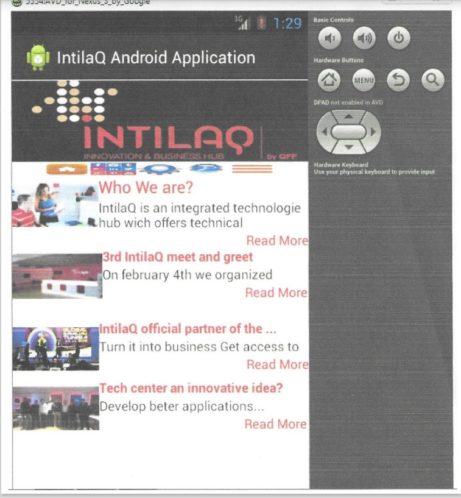
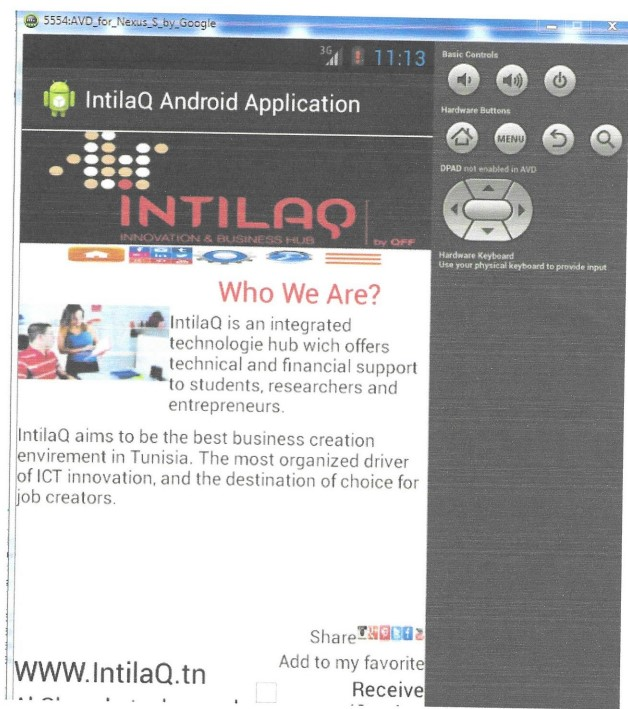
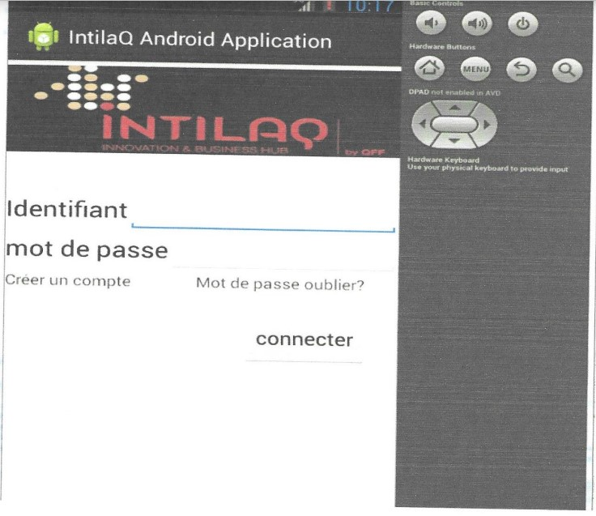
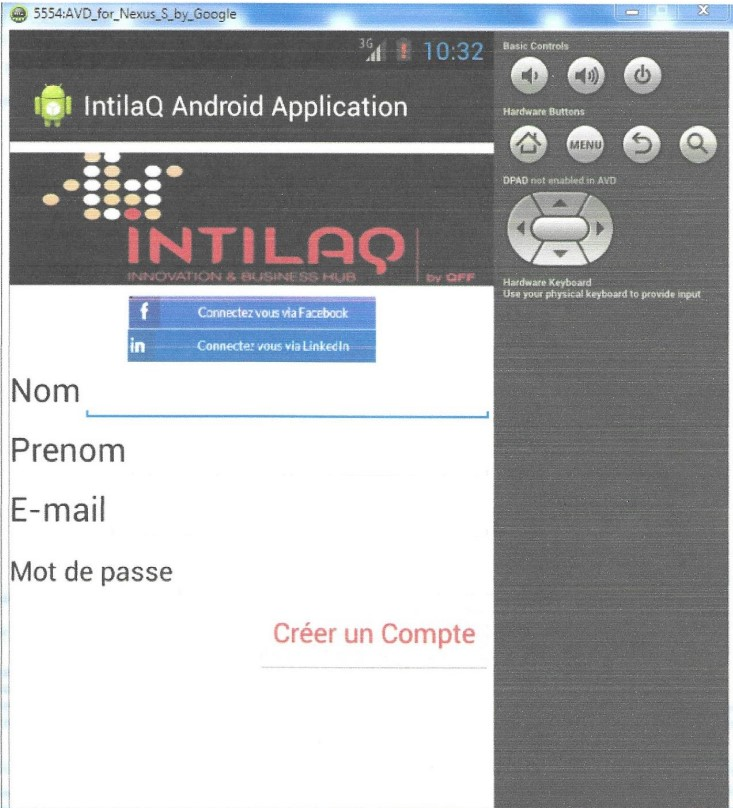

une application android pour mon projet fin d'étude
1-home page: présente l'interface principale de l'application, contient une barre verticale de menu ( accueil, réseaux sociaux, paramètres, recherche, catégorie) et des vues primaires des articles pour que l'utilisateur puisse les consulter via le lien "read more"
2-les articles l'utilisateur peut lire un article, le partager sur les réseaux "share" et l'ajouter a sa liste des favoris"add to favorite".
3-connecter l'utilisateur peut se connecter en utilisant un réseau social ou via son email. il remplit les champs login et mot de passe et valide par ok. si le compte existe il sera dirigé vers la page désirée sinon il devra créer un compte.
4-créer un compte dans cette interface l'utilisateur crée un compte. la première possibilité est via son compte linkedin ou facebook. la seconde en utilisant son email, alors il remplit les champs avec ses cordonnées et valide avec ok.
